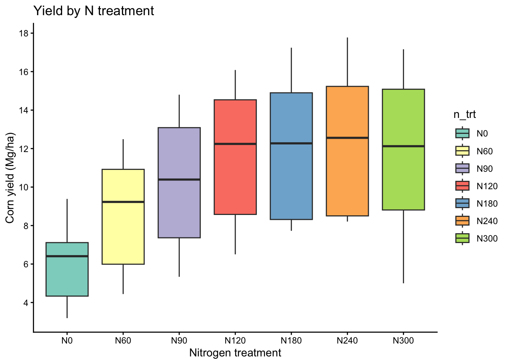
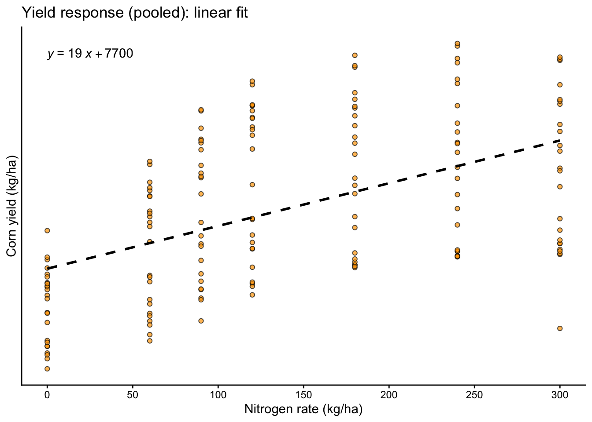
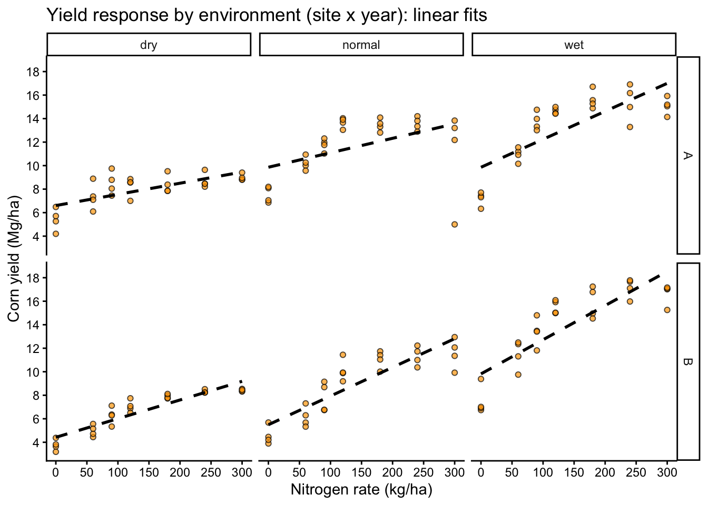
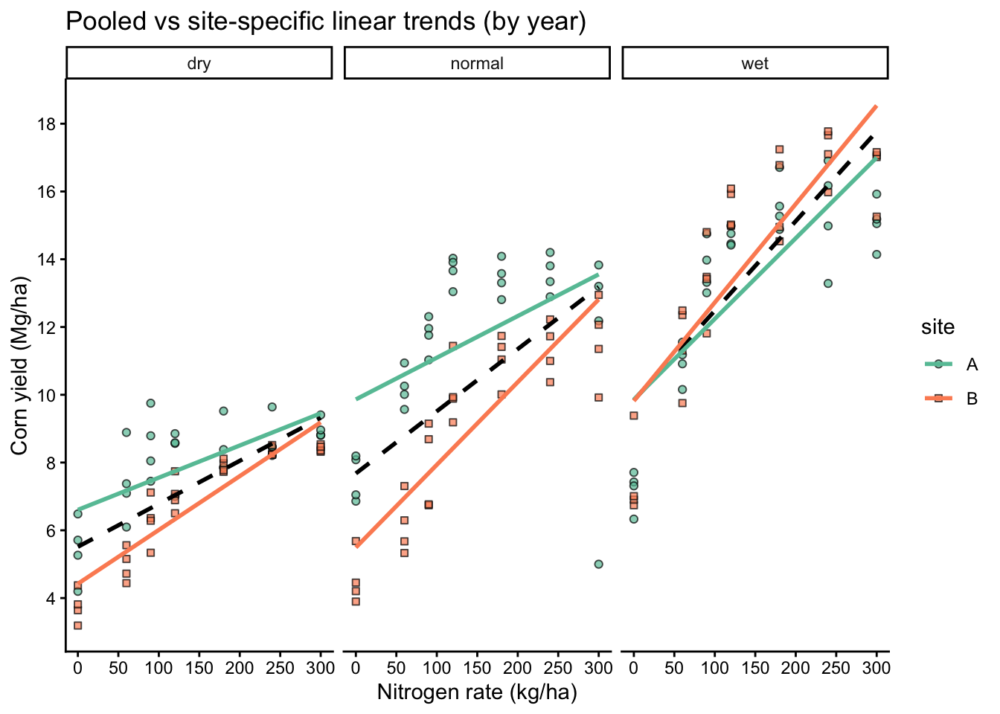
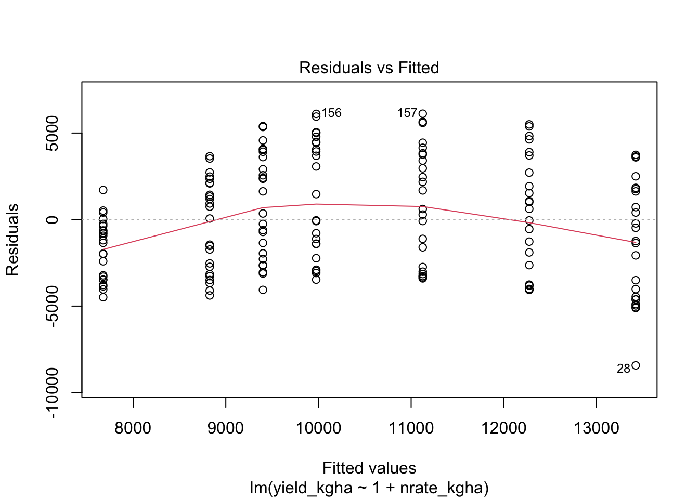
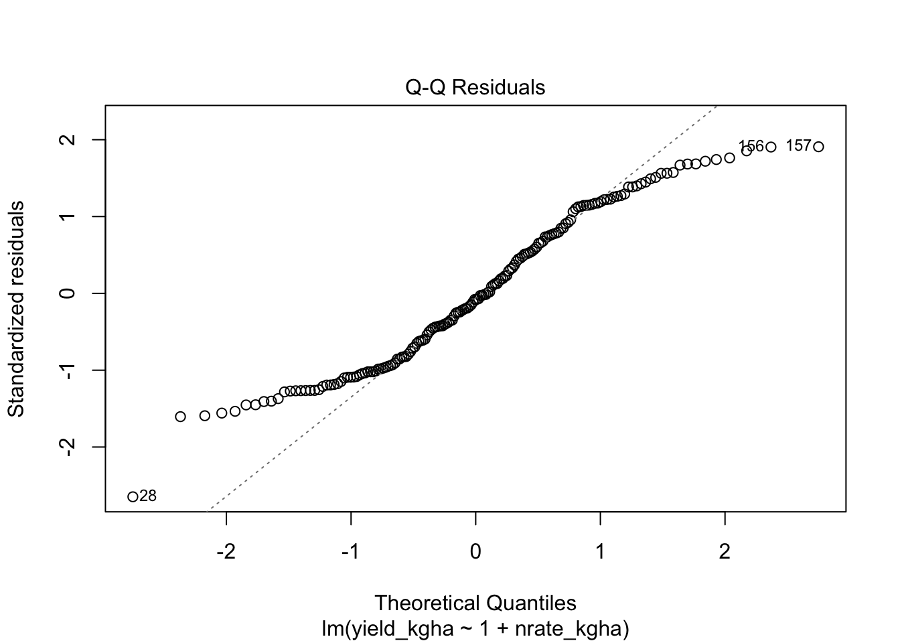
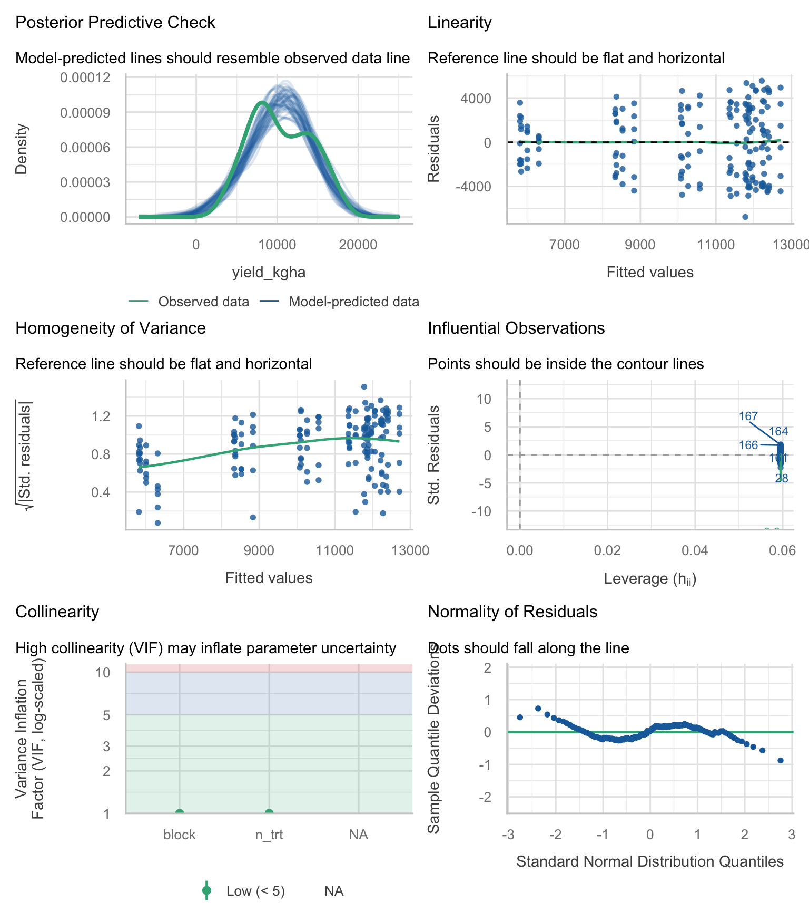
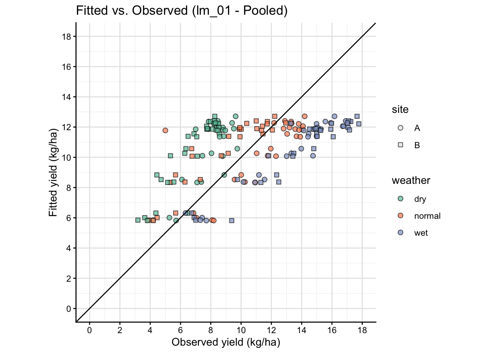
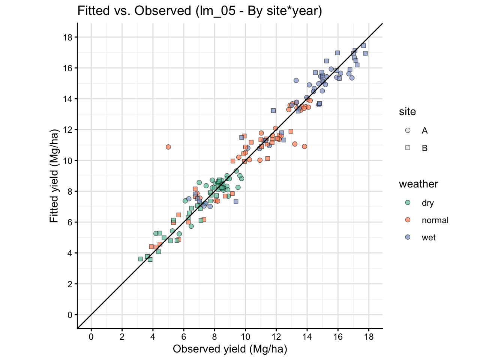

Models II: Linear Models in Ag-Data Science
1 Introduction
Linear models (LMs) are the workhorse for inference in agronomy: they connect field designs (blocks, treatments, sites, years) to estimable effects, standard errors, and tests of hypotheses.
That said, many agronomic datasets are not well represented by a single fixed-effect LM. Yield responses to inputs can be curved (non-linear), site-by-year variability can be large, and error structures can be non-independent (blocks, split-plots, repeated measures) or heteroscedastic. This document focuses on linear models as a baseline, while using plots to show where the baseline becomes too simple.
Even when the final model is a mixed model or a non-linear model, a well-posed linear model is still useful to:
- define the estimands (means, contrasts, slopes)
- diagnose data issues (outliers, leverage, heteroscedasticity)
- communicate the direction and magnitude of effects
2 What is a Linear Model?
A linear model can be written in two equivalent ways.
2.1 Scalar form
\[Y_i = \beta_0 + \beta_1 X_{i1} + \beta_2 X_{i2} + \cdots + \beta_p X_{ip} + \varepsilon_i\]
- \(Y_i\): response for observation \(i\) (for example, yield)
- \(X_{ij}\): predictor \(j\) for observation \(i\) (continuous values or columns created from factor levels via contrasts)
- \(\beta_j\): unknown parameters (effects) to estimate
- \(\varepsilon_i\): error term (unexplained variation)
2.2 Matrix form
This is the most compact way to express a linear model and is the language behind ANOVA tables and regression.
\[\mathbf{y} = \mathbf{X}\boldsymbol{\beta} + \boldsymbol{\varepsilon}\]
This representation matters in experiments because ANOVA and regression use the same linear-model framework.
- X comes from your data table: it is the model (design) matrix containing the explanatory variables as used by the model (including columns created by factor coding, contrasts, and interactions).
- beta is the vector of effects/parameters attached to those columns (for example, treatment effects, block effects, site effects).
In other words, your experimental design determines how the explanatory variables are encoded into X, and therefore what each element of beta represents.
A polynomial term (quadratic, cubic) changes the shape of the relationship but remains a linear model because the model is still linear in the parameters \(\beta\).
3 Regression vs. ANOVA
Same engine, different questions.
- Regression: at least one explanatory variable is continuous (for example, yield vs nitrogen rate).
- ANOVA: at least one predictor is categorical (for example, treatment means).
Both are solved by the same least squares machinery; the main difference is how we encode predictors and what we interpret (slopes vs means/contrasts).
4 Packages
5 Data
We will use a synthetic dataset of corn yield response to nitrogen fertilizer across two sites and three years with contrasting weather.
Show code
# Read CSV file
cornn_data <- read.csv("data/cornn_data.csv") %>%
mutate(n_trt = factor(n_trt, levels = c("N0","N60","N90","N120",
"N180","N240","N300")),
block = factor(block),
site = factor(site),
year = factor(year),
weather = factor(weather) ) %>%
mutate(yield_tha = yield_kgha / 1000)
glimpse(cornn_data)Rows: 168
Columns: 8
$ site <fct> A, A, A, A, A, A, A, A, A, A, A, A, A, A, A, A, A, A, A, A,…
$ year <fct> 2004, 2004, 2004, 2004, 2004, 2004, 2004, 2004, 2004, 2004,…
$ block <fct> 1, 2, 3, 4, 1, 2, 3, 4, 1, 2, 3, 4, 1, 2, 3, 4, 1, 2, 3, 4,…
$ n_trt <fct> N0, N0, N0, N0, N60, N60, N60, N60, N90, N90, N90, N90, N12…
$ nrate_kgha <int> 0, 0, 0, 0, 60, 60, 60, 60, 90, 90, 90, 90, 120, 120, 120, …
$ yield_kgha <int> 6860, 7048, 8083, 8194, 10010, 9568, 10256, 10939, 11959, 1…
$ weather <fct> normal, normal, normal, normal, normal, normal, normal, nor…
$ yield_tha <dbl> 6.860, 7.048, 8.083, 8.194, 10.010, 9.568, 10.256, 10.939, …6 Misc
Show code
set_theme(theme_classic())This document uses block consistently as the blocking factor. If your dataset uses rep instead, update the code accordingly.
7 Exploratory Data Analysis
7.1 Quick view
Here we treat nitrogen rate as a categorical treatment and compare yield distributions across levels.
Show code
eda_box <- cornn_data %>%
ggplot(aes(x = n_trt, y = yield_tha)) +
geom_boxplot(aes(fill = n_trt)) +
scale_fill_brewer(palette = "Set3") +
labs(title = "Yield by N treatment",
x = "Nitrogen treatment",
y = "Corn yield (Mg/ha)")+
scale_y_continuous(breaks = seq(0,18,by=2))
eda_box
7.2 Yield vs nitrogen rate
Here we treat nitrogen rate as a continuous explanatory variable and visualize the average trend with a simple linear fit.
Show code
eda_scatter <- cornn_data %>%
ggplot(aes(x = nrate_kgha, y = yield_kgha)) +
geom_point(alpha = 0.7, shape = 21, fill = "orange", size = 1.5) +
geom_smooth(method = "lm", se = FALSE, linetype = 2, color = "black") +
labs(title = "Yield response (pooled): linear fit",
x = "Nitrogen rate (kg/ha)",
y = "Corn yield (kg/ha)")+
scale_y_continuous(breaks = seq(0,18,by=2))+
scale_x_continuous(breaks = seq(0,300,by=50))+
ggpubr::stat_regline_equation(method = "lm",
label.x.npc = "left", label.y.npc = "top", label.sep = "\n")
eda_scatter
7.3 Heterogeneity across environments
Here we split the data by site and year to see whether the yield response pattern changes across environments.
Show code
eda_scatter_env <- cornn_data %>%
ggplot(aes(x = nrate_kgha, y = yield_tha)) +
geom_point(alpha = 0.7, shape = 21, fill = "orange", size = 1.5) +
geom_smooth(method = "lm", se = FALSE, linetype = 2, color = "black") +
facet_grid(site ~ weather) +
labs(title = "Yield response by environment (site x year): linear fits",
x = "Nitrogen rate (kg/ha)",
y = "Corn yield (Mg/ha)")+
scale_y_continuous(breaks = seq(0,18,by=2))+
scale_x_continuous(breaks = seq(0,300,by=50))
eda_scatter_env
- Different slopes by site or year (suggests interactions or varying coefficients)
- Curvature (suggests polynomial terms or non-linear models)
- Different spread by environment or N rate (suggests heteroscedasticity)
8 Model Fitting: Linear Regression and ANOVA
8.1 Simple linear regression
We start with a pooled model that estimates one average slope across all environments.
Call:
lm(formula = yield_kgha ~ 1 + nrate_kgha, data = cornn_data)
Residuals:
Min 1Q Median 3Q Max
-8424.1 -2984.2 -251.2 2596.0 6117.9
Coefficients:
Estimate Std. Error t value Pr(>|t|)
(Intercept) 7676.634 438.308 17.51 < 2e-16 ***
nrate_kgha 19.158 2.554 7.50 3.66e-12 ***
---
Signif. codes: 0 '***' 0.001 '**' 0.01 '*' 0.05 '.' 0.1 ' ' 1
Residual standard error: 3217 on 166 degrees of freedom
Multiple R-squared: 0.2531, Adjusted R-squared: 0.2486
F-statistic: 56.25 on 1 and 166 DF, p-value: 3.658e-12Show code
anova(reg_fit)Analysis of Variance Table
Response: yield_kgha
Df Sum Sq Mean Sq F value Pr(>F)
nrate_kgha 1 582135209 582135209 56.25 3.658e-12 ***
Residuals 166 1717930697 10348980
---
Signif. codes: 0 '***' 0.001 '**' 0.01 '*' 0.05 '.' 0.1 ' ' 1Show code
car::Anova(reg_fit, type = 2)Anova Table (Type II tests)
Response: yield_kgha
Sum Sq Df F value Pr(>F)
nrate_kgha 582135209 1 56.25 3.658e-12 ***
Residuals 1717930697 166
---
Signif. codes: 0 '***' 0.001 '**' 0.01 '*' 0.05 '.' 0.1 ' ' 1Show code
car::Anova(reg_fit, type = 3)Anova Table (Type III tests)
Response: yield_kgha
Sum Sq Df F value Pr(>F)
(Intercept) 3174537867 1 306.75 < 2.2e-16 ***
nrate_kgha 582135209 1 56.25 3.658e-12 ***
Residuals 1717930697 166
---
Signif. codes: 0 '***' 0.001 '**' 0.01 '*' 0.05 '.' 0.1 ' ' 18.2 Why a simple model can look good
A statistically significant slope can still be a poor scientific summary if responses differ by environment.
A single slope forces one response pattern across all sites and years.
Show code
# Compare pooled fit vs environment-specific fits visually
cornn_data %>%
ggplot(aes(x = nrate_kgha, y = yield_tha)) +
geom_point(alpha = 0.7, size = 1.5,
aes(fill=site, shape=site)) +
# Fit by panel
geom_smooth(method = "lm", se = FALSE, linetype = 2, color = "black") +
geom_smooth(aes(color = site), method = "lm", se = FALSE) +
facet_wrap(~ weather) +
scale_shape_manual(values = c(21, 22, 23), name = "site") +
scale_fill_brewer(palette = "Set2", name = "site") +
scale_color_brewer(palette = "Set2", name = "site") +
labs(title = "Pooled vs site-specific linear trends (by year)",
x = "Nitrogen rate (kg/ha)",
y = "Corn yield (Mg/ha)")+
scale_y_continuous(breaks = seq(0,18,by=2))+
scale_x_continuous(breaks = seq(0,300,by=50))
If site-specific lines differ meaningfully from the pooled line, a single fixed slope is a poor summary of the process, even if the pooled model has significant p-values or a respectable R2.
8.3 Linear regression
This variant forces the fitted line through the origin, which is rarely justified in agronomy.
Call:
lm(formula = yield_kgha ~ 1 + nrate_kgha, data = cornn_data)
Residuals:
Min 1Q Median 3Q Max
-8424.1 -2984.2 -251.2 2596.0 6117.9
Coefficients:
Estimate Std. Error t value Pr(>|t|)
(Intercept) 7676.634 438.308 17.51 < 2e-16 ***
nrate_kgha 19.158 2.554 7.50 3.66e-12 ***
---
Signif. codes: 0 '***' 0.001 '**' 0.01 '*' 0.05 '.' 0.1 ' ' 1
Residual standard error: 3217 on 166 degrees of freedom
Multiple R-squared: 0.2531, Adjusted R-squared: 0.2486
F-statistic: 56.25 on 1 and 166 DF, p-value: 3.658e-12Show code
summary(reg_noint)
Call:
lm(formula = yield_kgha ~ 0 + nrate_kgha, data = cornn_data)
Residuals:
Min 1Q Median 3Q Max
-11809.8 -303.7 3197.5 6720.5 9758.1
Coefficients:
Estimate Std. Error t value Pr(>|t|)
nrate_kgha 56.033 2.434 23.02 <2e-16 ***
---
Signif. codes: 0 '***' 0.001 '**' 0.01 '*' 0.05 '.' 0.1 ' ' 1
Residual standard error: 5413 on 167 degrees of freedom
Multiple R-squared: 0.7604, Adjusted R-squared: 0.759
F-statistic: 530.1 on 1 and 167 DF, p-value: < 2.2e-16Show code
anova(reg_noint)Analysis of Variance Table
Response: yield_kgha
Df Sum Sq Mean Sq F value Pr(>F)
nrate_kgha 1 1.5530e+10 1.5530e+10 530.1 < 2.2e-16 ***
Residuals 167 4.8925e+09 2.9296e+07
---
Signif. codes: 0 '***' 0.001 '**' 0.01 '*' 0.05 '.' 0.1 ' ' 1Show code
car::Anova(reg_noint, type = 2)Anova Table (Type II tests)
Response: yield_kgha
Sum Sq Df F value Pr(>F)
nrate_kgha 1.5530e+10 1 530.1 < 2.2e-16 ***
Residuals 4.8925e+09 167
---
Signif. codes: 0 '***' 0.001 '**' 0.01 '*' 0.05 '.' 0.1 ' ' 1Show code
car::Anova(reg_noint, type = 3)Anova Table (Type III tests)
Response: yield_kgha
Sum Sq Df F value Pr(>F)
nrate_kgha 1.5530e+10 1 530.1 < 2.2e-16 ***
Residuals 4.8925e+09 167
---
Signif. codes: 0 '***' 0.001 '**' 0.01 '*' 0.05 '.' 0.1 ' ' 1Rarely for agronomy. It implies the expected response is exactly 0 when N rate is 0 (or when all predictors are 0). Use it only when that constraint is scientifically justified.
8.4 ANOVA
Here we treat nitrogen as a categorical factor and estimate treatment means (and blocks if included).
Show code
# CRD (ignoring blocks)
anova_crd <- lm(yield_kgha ~ n_trt, data = cornn_data)
# RCBD (blocks as fixed effect in lm)
anova_rcbd <- lm(yield_kgha ~ n_trt + block, data = cornn_data)
# Treatment by block interaction (usually not desired as a model, but shown for illustration)
anova_trt_block <- lm(yield_kgha ~ n_trt * block, data = cornn_data)
car::Anova(anova_crd, type = 3)Anova Table (Type III tests)
Response: yield_kgha
Sum Sq Df F value Pr(>F)
(Intercept) 862968308 1 92.663 < 2.2e-16 ***
n_trt 800679144 6 14.329 4.687e-13 ***
Residuals 1499386761 161
---
Signif. codes: 0 '***' 0.001 '**' 0.01 '*' 0.05 '.' 0.1 ' ' 1Show code
car::Anova(anova_rcbd, type = 3)Anova Table (Type III tests)
Response: yield_kgha
Sum Sq Df F value Pr(>F)
(Intercept) 669823217 1 70.8934 2.155e-14 ***
n_trt 800679144 6 14.1238 7.656e-13 ***
block 6553460 3 0.2312 0.8745
Residuals 1492833301 158
---
Signif. codes: 0 '***' 0.001 '**' 0.01 '*' 0.05 '.' 0.1 ' ' 1Show code
car::Anova(anova_trt_block, type = 3)Anova Table (Type III tests)
Response: yield_kgha
Sum Sq Df F value Pr(>F)
(Intercept) 221701131 1 21.1557 9.385e-06 ***
n_trt 225093237 6 3.5799 0.002485 **
block 2709898 3 0.0862 0.967497
n_trt:block 25706084 18 0.1363 0.999992
Residuals 1467127217 140
---
Signif. codes: 0 '***' 0.001 '**' 0.01 '*' 0.05 '.' 0.1 ' ' 18.5 ANOVA
This parameterization estimates a mean for each treatment level directly (useful for interpretation), while still representing the same fitted values as the intercept model. HOWEVER, beware the R2 values when you remove the intercept are WRONG! Don’t use that.
Show code
Anova Table (Type III tests)
Response: yield_kgha
Sum Sq Df F value Pr(>F)
n_trt 5612876425 7 84.8659 <2e-16 ***
block 6553460 3 0.2312 0.8745
Residuals 1492833301 158
---
Signif. codes: 0 '***' 0.001 '**' 0.01 '*' 0.05 '.' 0.1 ' ' 1Show code
summary(anova_rcbd)
Call:
lm(formula = yield_kgha ~ n_trt + block, data = cornn_data)
Residuals:
Min 1Q Median 3Q Max
-6777.3 -2784.1 110.9 2617.3 5560.5
Coefficients:
Estimate Std. Error t value Pr(>|t|)
(Intercept) 6314.3 749.9 8.420 2.16e-14 ***
n_trtN60 2520.7 887.3 2.841 0.00509 **
n_trtN90 4257.5 887.3 4.798 3.68e-06 ***
n_trtN120 5542.7 887.3 6.246 3.72e-09 ***
n_trtN180 6049.9 887.3 6.818 1.85e-10 ***
n_trtN240 6396.7 887.3 7.209 2.19e-11 ***
n_trtN300 5960.5 887.3 6.717 3.17e-10 ***
block2 -305.9 670.8 -0.456 0.64898
block3 -468.1 670.8 -0.698 0.48627
block4 -497.5 670.8 -0.742 0.45935
---
Signif. codes: 0 '***' 0.001 '**' 0.01 '*' 0.05 '.' 0.1 ' ' 1
Residual standard error: 3074 on 158 degrees of freedom
Multiple R-squared: 0.351, Adjusted R-squared: 0.314
F-statistic: 9.493 on 9 and 158 DF, p-value: 1.707e-11Show code
summary(anova_noint)
Call:
lm(formula = yield_kgha ~ -1 + n_trt + block, data = cornn_data)
Residuals:
Min 1Q Median 3Q Max
-6777.3 -2784.1 110.9 2617.3 5560.5
Coefficients:
Estimate Std. Error t value Pr(>|t|)
n_trtN0 6314.3 749.9 8.420 2.16e-14 ***
n_trtN60 8835.0 749.9 11.781 < 2e-16 ***
n_trtN90 10571.8 749.9 14.097 < 2e-16 ***
n_trtN120 11857.0 749.9 15.811 < 2e-16 ***
n_trtN180 12364.2 749.9 16.487 < 2e-16 ***
n_trtN240 12711.1 749.9 16.950 < 2e-16 ***
n_trtN300 12274.8 749.9 16.368 < 2e-16 ***
block2 -305.9 670.8 -0.456 0.649
block3 -468.1 670.8 -0.698 0.486
block4 -497.5 670.8 -0.742 0.459
---
Signif. codes: 0 '***' 0.001 '**' 0.01 '*' 0.05 '.' 0.1 ' ' 1
Residual standard error: 3074 on 158 degrees of freedom
Multiple R-squared: 0.9269, Adjusted R-squared: 0.9223
F-statistic: 200.4 on 10 and 158 DF, p-value: < 2.2e-169 Model Assumptions
This checklist is the standard set of assumptions behind least squares inference. Some items can be assessed with formal tests, but most are evaluated using residual plots plus knowledge of the experimental design and error structure.
9.1 1) Linearity
For continuous explanatory variables, the mean response should be approximately linear in the predictors as specified (given the terms you include in the model, such as interactions or polynomial terms).
Show code
# Residual plot for regression
plot(reg_fit, which = 1)
9.2 2) Normality of residuals
Show code
# Normal Q-Q plot
plot(reg_fit, which = 2)
Show code
# Formal test (sensitive to large n)
shapiro.test(resid(reg_fit))
Shapiro-Wilk normality test
data: resid(reg_fit)
W = 0.96023, p-value = 0.00010139.3 3) Homoscedasticity
Residual variance should be approximately constant across fitted values and across groups of interest.
Show code
# Levene tests are common for simple fixed-effect ANOVA settings
car::leveneTest(yield_kgha ~ n_trt, data = cornn_data)
# You can also apply Levene-type ideas to residuals from a fixed-effect lm
car::leveneTest(resid(reg_fit) ~ cornn_data$n_trt)- Levene tests are most useful in simple fixed-effect ANOVA contexts (for example, one-way or two-way ANOVA).
- In mixed models, the relevant question is often whether the residual variance is homogeneous after accounting for random effects and the covariance structure. A vanilla Levene test on raw data (or on lm residuals) does not answer that question.
- Levene tests are sensitive to sample size: with large n, tiny variance differences can be statistically significant but practically irrelevant; with small n, the test can have low power.
In practice, prefer combining (1) residual plots by groups and fitted values, and (2) model-based approaches (for example, specifying a variance function or group-specific residual variance in an appropriate model) when heteroscedasticity matters.
9.4 4) Independence
There is no universal “independence test” that fixes a design problem. Independence is addressed by:
- the design (randomization and blocking)
- the appropriate error structure (mixed models, repeated measures models, spatial correlation)
9.5 5) One-stop diagnostics
We can run a compact set of diagnostic checks (residual distribution, heteroscedasticity signals, influential points) using the performance package. Treat these plots as screening tools to guide what you look at next, not as a substitute for understanding the design and the error structure.
Show code
performance::check_model(anova_rcbd)
If diagnostics show strong curvature, heteroscedasticity, or environment-specific patterns, treat your LM as a baseline, not as the final model.
10 Model Building: Fixed-effect candidates
These are all fixed-effect models. They are useful for learning and for baseline comparisons.
Show code
# Null model
lm_00 <- lm(yield_kgha ~ 1, data = cornn_data)
# Treatment + block
lm_01 <- lm(yield_kgha ~ n_trt + block, data = cornn_data)
# Add site
lm_02 <- lm(yield_kgha ~ n_trt + site + block, data = cornn_data)
# Add weather
lm_03 <- lm(yield_kgha ~ n_trt + weather + block, data = cornn_data)
# Add site and weather
lm_04 <- lm(yield_kgha ~ n_trt + site + weather + block, data = cornn_data)
# Main effects and interactions
lm_05 <- lm(yield_kgha ~ n_trt * site * weather + block, data = cornn_data)11 Model Selection: nested F-tests and information criteria
We often compare multiple candidate models for the same response variable to balance fit and parsimony. In agronomy, model selection is not a substitute for thinking about design and biology; it is a tool to compare plausible alternatives.
11.1 Nested F-tests
Show code
anova(lm_01, lm_02, lm_03, lm_04, lm_05)Analysis of Variance Table
Model 1: yield_kgha ~ n_trt + block
Model 2: yield_kgha ~ n_trt + site + block
Model 3: yield_kgha ~ n_trt + weather + block
Model 4: yield_kgha ~ n_trt + site + weather + block
Model 5: yield_kgha ~ n_trt * site * weather + block
Res.Df RSS Df Sum of Sq F Pr(>F)
1 158 1492833301
2 157 1444009602 1 48823699 46.6647 3.443e-10 ***
3 156 391188885 1 1052820717 1006.2652 < 2.2e-16 ***
4 155 342365186 1 48823699 46.6647 3.443e-10 ***
5 123 128690677 32 213674509 6.3821 2.304e-14 ***
---
Signif. codes: 0 '***' 0.001 '**' 0.01 '*' 0.05 '.' 0.1 ' ' 111.2 AIC and BIC
AIC and BIC are likelihood-based criteria that trade off goodness-of-fit against model complexity.
- AIC tends to favor models with better predictive performance (it penalizes complexity, but less strongly).
- BIC penalizes complexity more strongly and tends to select simpler models as sample size increases.
Use delta values (differences from the best, lowest-criterion model). Avoid translating deltas into simple “percent support”. The useful comparison is the magnitude of the delta relative to the best model.
A commonly cited rule-of-thumb (Anderson, 2008) is:
- Δ close to 0: strong empirical support
- Δ in the rough range 4 to 7: considerably less support
- Δ in the fringes (about 9 to 14): relatively little support
Important nuance (also emphasized by Anderson, 2008, Chapter 4): the old classroom rule “ΔAIC > 2 means dismiss the model” is too aggressive. Models with Δ around 2, 4, or even 6 to 7 can still have meaningful support and should not be automatically discarded.
Where Δ is the difference from the minimum AIC (or AICc) within the candidate set.
Pros - Provides a simple way to compare multiple candidate models, not only nested ones. - Encourages parsimony (guards against overfitting).
Cons / limitations - AIC/BIC comparisons are valid only when models are fit to the same response variable on the same scale and using the same data. Do not compare models fit to different transformations (for example, yield vs log(yield)) using raw AIC/BIC values. - These criteria assume the likelihood is comparable across models. If you change the error model, use different variance structures, or fit models with different likelihood definitions, interpret comparisons cautiously. - In unbalanced multi-environment datasets, AIC/BIC may favor statistically convenient models that still miss key biological structure (for example, varying response curves by environment).
Practical workflow: use AIC/BIC to rank plausible models, then confirm adequacy with diagnostics and scientific interpretability.
Show code
AIC(lm_01, lm_02, lm_03, lm_04, lm_05) df AIC
lm_01 11 3186.760
lm_02 12 3183.173
lm_03 13 2965.767
lm_04 14 2945.371
lm_05 46 2844.988Show code
BIC(lm_01, lm_02, lm_03, lm_04, lm_05) df BIC
lm_01 11 3221.123
lm_02 12 3220.661
lm_03 13 3006.379
lm_04 14 2989.106
lm_05 46 2988.691Show code
# Optional: compute deltas relative to the best model in the set
crit_tbl <- tibble(
model = c("lm_01","lm_02","lm_03","lm_04","lm_05"),
AIC = c(AIC(lm_01), AIC(lm_02), AIC(lm_03), AIC(lm_04), AIC(lm_05)),
BIC = c(BIC(lm_01), BIC(lm_02), BIC(lm_03), BIC(lm_04), BIC(lm_05))
) %>%
mutate(
dAIC = AIC - min(AIC),
dBIC = BIC - min(BIC)
) %>%
arrange(AIC)
crit_tbl# A tibble: 5 × 5
model AIC BIC dAIC dBIC
<chr> <dbl> <dbl> <dbl> <dbl>
1 lm_05 2845. 2989. 0 0
2 lm_04 2945. 2989. 100. 0.415
3 lm_03 2966. 3006. 121. 17.7
4 lm_02 3183. 3221. 338. 232.
5 lm_01 3187. 3221. 342. 232. AIC/BIC comparisons depend on the likelihood assumptions. With clear heteroscedasticity or correlation, these criteria can favor models that are statistically convenient rather than scientifically adequate.
12 Significance of effects
Type II and Type III tests answer different questions when interactions are present, so you should match the test to your inferential goal.
Show code
car::Anova(lm_05, type = 2)Anova Table (Type II tests)
Response: yield_kgha
Sum Sq Df F value Pr(>F)
n_trt 800679144 6 127.5455 < 2.2e-16 ***
site 48823699 1 46.6647 3.443e-10 ***
weather 1101644416 2 526.4650 < 2.2e-16 ***
block 6553460 3 2.0879 0.1053
n_trt:site 32240563 6 5.1358 9.665e-05 ***
n_trt:weather 88856968 12 7.0773 1.131e-09 ***
site:weather 79885562 2 38.1765 1.266e-13 ***
n_trt:site:weather 12691415 12 1.0109 0.4432
Residuals 128690677 123
---
Signif. codes: 0 '***' 0.001 '**' 0.01 '*' 0.05 '.' 0.1 ' ' 1Show code
car::Anova(lm_05, type = 3)Anova Table (Type III tests)
Response: yield_kgha
Sum Sq Df F value Pr(>F)
(Intercept) 122656903 1 117.2330 < 2.2e-16 ***
n_trt 36106271 6 5.7516 2.649e-05 ***
site 5502903 1 5.2596 0.023524 *
weather 10451960 2 4.9949 0.008210 **
block 6553460 3 2.0879 0.105268
n_trt:site 8426862 6 1.3424 0.243500
n_trt:weather 61367142 12 4.8878 1.498e-06 ***
site:weather 11037465 2 5.2747 0.006341 **
n_trt:site:weather 12691415 12 1.0109 0.443194
Residuals 128690677 123
---
Signif. codes: 0 '***' 0.001 '**' 0.01 '*' 0.05 '.' 0.1 ' ' 1- Type II is commonly used for models with interactions when the goal is marginal tests of main effects (under hierarchy).
- Type III tests each term given all other terms (including interactions), which can be useful but is more sensitive to coding and balance.
13 Means Comparisons with emmeans and cld
13.1 Interaction means
Show code
emmeans(lm_05, pairwise ~ n_trt:weather) %>%
cld(., level = 0.05, decreasing = TRUE) n_trt weather emmean SE df lower.CL upper.CL .group
N240 wet 16232 362 123 16210 16255 1
N300 wet 15851 362 123 15828 15873 1
N180 wet 15742 362 123 15719 15764 1
N120 wet 15080 362 123 15058 15103 12
N90 wet 13571 362 123 13548 13593 23
N240 normal 12445 362 123 12422 12468 34
N180 normal 12247 362 123 12224 12270 34
N120 normal 11886 362 123 11863 11908 34
N300 normal 11312 362 123 11290 11335 45
N60 wet 11213 362 123 11190 11236 45
N90 normal 9800 362 123 9777 9822 56
N300 dry 8708 362 123 8685 8730 67
N240 dry 8502 362 123 8479 8525 67
N60 normal 8172 362 123 8149 8195 67
N180 dry 8150 362 123 8128 8173 67
N120 dry 7652 362 123 7629 7674 78
N90 dry 7392 362 123 7369 7414 78
N0 wet 7352 362 123 7329 7374 78
N60 dry 6166 362 123 6143 6189 89
N0 normal 6053 362 123 6030 6076 89
N0 dry 4585 362 123 4562 4607 9
Results are averaged over the levels of: site, block
Confidence level used: 0.05
P value adjustment: tukey method for comparing a family of 21 estimates
significance level used: alpha = 0.05
NOTE: If two or more means share the same grouping symbol,
then we cannot show them to be different.
But we also did not show them to be the same. 13.2 Same model, different slicing
Show code
emmeans(lm_05, pairwise ~ n_trt, by = "weather") %>%
cld(., level = 0.05, decreasing = TRUE, Letters = letters)weather = dry:
n_trt emmean SE df lower.CL upper.CL .group
N300 8708 362 123 8685 8730 a
N240 8502 362 123 8479 8525 a
N180 8150 362 123 8128 8173 a
N120 7652 362 123 7629 7674 ab
N90 7392 362 123 7369 7414 ab
N60 6166 362 123 6143 6189 b
N0 4585 362 123 4562 4607 c
weather = normal:
n_trt emmean SE df lower.CL upper.CL .group
N240 12445 362 123 12422 12468 a
N180 12247 362 123 12224 12270 a
N120 11886 362 123 11863 11908 a
N300 11312 362 123 11290 11335 ab
N90 9800 362 123 9777 9822 b
N60 8172 362 123 8149 8195 c
N0 6053 362 123 6030 6076 d
weather = wet:
n_trt emmean SE df lower.CL upper.CL .group
N240 16232 362 123 16210 16255 a
N300 15851 362 123 15828 15873 a
N180 15742 362 123 15719 15764 a
N120 15080 362 123 15058 15103 ab
N90 13571 362 123 13548 13593 b
N60 11213 362 123 11190 11236 c
N0 7352 362 123 7329 7374 d
Results are averaged over the levels of: site, block
Confidence level used: 0.05
P value adjustment: tukey method for comparing a family of 7 estimates
significance level used: alpha = 0.05
NOTE: If two or more means share the same grouping symbol,
then we cannot show them to be different.
But we also did not show them to be the same. Show code
LETTERS [1] "A" "B" "C" "D" "E" "F" "G" "H" "I" "J" "K" "L" "M" "N" "O" "P" "Q" "R" "S"
[20] "T" "U" "V" "W" "X" "Y" "Z"Show code
letters [1] "a" "b" "c" "d" "e" "f" "g" "h" "i" "j" "k" "l" "m" "n" "o" "p" "q" "r" "s"
[20] "t" "u" "v" "w" "x" "y" "z"14 Interpreting coefficients
14.1 Regression
- Intercept (\(\beta_0\)): expected value of \(Y\) when \(X = 0\).
- Slope (\(\beta_1\)): change in expected \(Y\) per unit change in \(X\).
14.2 ANOVA
- Intercept: reference level mean (baseline) under the default contrasts.
- Factor levels: differences relative to the reference level.
Show code
coef(lm_05) (Intercept) n_trtN60
5731.8869 1949.2500
n_trtN90 n_trtN120
3095.2500 2836.5000
n_trtN180 n_trtN240
2988.2500 3278.2500
n_trtN300 siteB
3581.2500 -1658.7500
weathernormal weatherwet
2132.2500 1780.0000
block2 block3
-305.9048 -468.1190
block4 n_trtN60:siteB
-497.5238 -735.5000
n_trtN90:siteB n_trtN120:siteB
-576.7500 460.7500
n_trtN180:siteB n_trtN240:siteB
1154.7500 1278.5000
n_trtN300:siteB n_trtN60:weathernormal
1083.7500 697.7500
n_trtN90:weathernormal n_trtN120:weathernormal
1122.0000 3277.0000
n_trtN180:weathernormal n_trtN240:weathernormal
2909.5000 2735.0000
n_trtN300:weathernormal n_trtN60:weatherwet
-74.2500 1807.5000
n_trtN90:weatherwet n_trtN120:weatherwet
3474.5000 4625.2500
n_trtN180:weatherwet n_trtN240:weatherwet
5424.5000 4865.0000
n_trtN300:weatherwet siteB:weathernormal
4300.0000 -1327.5000
siteB:weatherwet n_trtN60:siteB:weathernormal
1973.7500 -320.5000
n_trtN90:siteB:weathernormal n_trtN120:siteB:weathernormal
-365.0000 -1023.0000
n_trtN180:siteB:weathernormal n_trtN240:siteB:weathernormal
-562.2500 -521.5000
n_trtN300:siteB:weathernormal n_trtN60:siteB:weatherwet
2421.0000 945.0000
n_trtN90:siteB:weatherwet n_trtN120:siteB:weatherwet
-124.2500 73.5000
n_trtN180:siteB:weatherwet n_trtN240:siteB:weatherwet
-1200.2500 197.0000
n_trtN300:siteB:weatherwet
152.0000 Show code
anova_coefs <- broom::tidy(lm_05)
anova_coefs# A tibble: 45 × 5
term estimate std.error statistic p.value
<chr> <dbl> <dbl> <dbl> <dbl>
1 (Intercept) 5732. 529. 10.8 1.34e-19
2 n_trtN60 1949. 723. 2.70 8.02e- 3
3 n_trtN90 3095. 723. 4.28 3.73e- 5
4 n_trtN120 2836. 723. 3.92 1.45e- 4
5 n_trtN180 2988. 723. 4.13 6.61e- 5
6 n_trtN240 3278. 723. 4.53 1.36e- 5
7 n_trtN300 3581. 723. 4.95 2.37e- 6
8 siteB -1659. 723. -2.29 2.35e- 2
9 weathernormal 2132. 723. 2.95 3.83e- 3
10 weatherwet 1780. 723. 2.46 1.52e- 2
# ℹ 35 more rows15 How much variance do we explain?
Show code
performance::r2(lm_00)# R2 for Linear Regression
R2: 0.000
adj. R2: 0.000Show code
performance::r2(lm_01)# R2 for Linear Regression
R2: 0.351
adj. R2: 0.314Show code
performance::r2(lm_02)# R2 for Linear Regression
R2: 0.372
adj. R2: 0.332Show code
performance::r2(lm_03)# R2 for Linear Regression
R2: 0.830
adj. R2: 0.818Show code
performance::r2(lm_04)# R2 for Linear Regression
R2: 0.851
adj. R2: 0.840Show code
performance::r2(lm_05)# R2 for Linear Regression
R2: 0.944
adj. R2: 0.924R2 (and adjusted R2) describes the proportion of variance explained within the fitted dataset. It almost always increases when you add predictors, even if those predictors are not scientifically meaningful.
Why this matters:
- R2 does not apply a formal penalty for complexity, so it can encourage overfitting.
- Two models can have very similar R2 but very different adequacy (for example, one captures the right structure across site-year, another misses it).
- In multi-environment agronomy, a high R2 can be driven by large mean shifts among environments, while still failing to represent the response process (for example, slope differences, curvature, heteroscedasticity).
Use R2 mainly as a descriptive summary (communication), and rely on a combination of scientific objectives, diagnostics, and appropriate comparison criteria (nested tests, AIC/BIC) for selection.
16 A plot that connects model and data
Observed vs fitted plots help you see whether the model is systematically over- or under-predicting within specific environments.
This is a simple visual way to see how well model prediction works.
Show code
fit_tbl <- cornn_data %>%
mutate(fitted_lm01 = predict(lm_01, newdata = cornn_data),
fitted_lm05 = predict(lm_05, newdata = cornn_data))
# Model 1
fit_tbl %>%
ggplot(aes(x = yield_kgha/1000, y = fitted_lm01/1000)) +
geom_point(alpha = 0.7, size = 2,
aes(fill = weather, shape = site)) +
geom_abline(intercept = 0, slope = 1) +
labs(title = "Fitted vs. Observed (lm_01 - Pooled)",
x = "Observed yield (kg/ha)",
y = "Fitted yield (kg/ha)")+
# Adjust scales
scale_shape_manual(values = c(21, 22), name = "site") +
scale_fill_brewer(palette = "Set2", name = "weather") +
guides( # Adjust legend to show both fill and shape clearly
fill = guide_legend(override.aes = list(shape = 21, color = "black")),
shape = guide_legend(override.aes = list(fill = "grey90")) ) +
#facet_grid(site ~ weather) +
scale_y_continuous(limits = c(0,18), breaks = seq(0,18,by=2))+
scale_x_continuous(limits = c(0,18), breaks = seq(0,18,by=2))+
coord_equal()+
# Add grid lines for better visibility
theme(panel.grid.major = element_line(color = "gray90"),
panel.grid.minor = element_line(color = "gray95"))
Show code
# Model 5
fit_tbl %>%
ggplot(aes(x = yield_kgha/1000, y = fitted_lm05/1000)) +
geom_point(
aes(fill = weather, shape = site),
alpha = 0.7, size = 2,
color = "black", stroke = 0.3
) +
geom_abline(intercept = 0, slope = 1) +
labs(
title = "Fitted vs. Observed (lm_05 - By site*year)",
x = "Observed yield (Mg/ha)",
y = "Fitted yield (Mg/ha)"
) +
scale_shape_manual(values = c(21, 22), name = "site") +
scale_fill_brewer(palette = "Set2", name = "weather") +
guides( # Adjust legend to show both fill and shape clearly
fill = guide_legend(override.aes = list(shape = 21, color = "black")),
shape = guide_legend(override.aes = list(fill = "grey90")) ) +
scale_y_continuous(limits = c(0,18), breaks = seq(0,18,by=2)) +
scale_x_continuous(limits = c(0,18), breaks = seq(0,18,by=2)) +
coord_equal() +
theme(
panel.grid.major = element_line(color = "gray90"),
panel.grid.minor = element_line(color = "gray95")
)
The fitted vs observed plot above is based on the same data used to fit the model, so it is not a true out-of-sample validation. It can show systematic patterns of misfit, but it does not provide an unbiased estimate of predictive performance. For a more rigorous assessment, consider using cross-validation or a separate test dataset.
17 Final comments
Linear models are essential for agricultural research because they provide the simplest framework for estimation and inference (slopes, means, contrasts). In practice, agronomic datasets often require extensions:
- mixed models for random effects (blocks, sites, years),
- heterogeneous variances and correlation structures,
- non-linear response models for inputs (for example, N response),
- varying coefficients by environment (site:weather, year)
On the next modules, we will revisit these same questions with more complex models that may (or not) outperform simple linear models.
18 References
Akaike, H. (1974). A new look at the statistical model identification. IEEE Transactions on Automatic Control, 19(6), 716–723. https://doi.org/10.1109/TAC.1974.1100705
Anderson, D. R. (2008). Model based inference in the life sciences: A primer on evidence. Springer, New York.
Brown, M. B., & Forsythe, A. B. (1974). Robust tests for the equality of variances. Journal of the American Statistical Association, 69(346), 364–367. https://doi.org/10.1080/01621459.1974.10482955
Burnham, K. P., & Anderson, D. R. (2002). Model selection and multimodel inference: A practical information-theoretic approach (2nd ed.). Springer.
Levene, H. (1960). Robust tests for equality of variances. In I. Olkin (Ed.), Contributions to probability and statistics: Essays in honor of Harold Hotelling (pp. 278–292). Stanford University Press.
Schwarz, G. (1978). Estimating the dimension of a model. The Annals of Statistics, 6(2), 461–464. https://doi.org/10.1214/aos/1176344136
Shapiro, S. S., & Wilk, M. B. (1965). An analysis of variance test for normality (complete samples). Biometrika, 52(3–4), 591–611. https://doi.org/10.1093/biomet/52.3-4.591